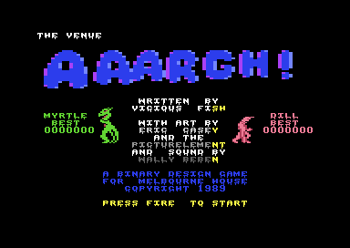
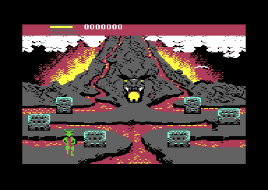
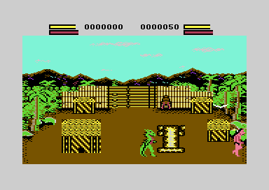

<meta charset="utf-8">
<meta name="viewport" content="width=device-width, initial-scale=1">
<title>Aaargh!</title>
<link rel="preconnect" href="https://fonts.googleapis.com">
<link rel="stylesheet" href="https://fonts.googleapis.com/css2?family=Lato:wght@400;700;900&family=IBM+Plex+Mono:wght@400;500&display=swap">
<style>
:root{
  --bg:#23262d; --paper:#e9e7e1; --surface:#ffffff; --surface-2:#f1efea; --line:#d5d3cc; --line-soft:#e0ded8;
  --ink:#2f3136; --ink-soft:#55585f; --ink-mute:#80838a;
  --link:#1f5fa8; --link-hover:#154480; --accent:#1f5fa8;
  --amber:#c25a00; --cyan:#1f5fa8; --coral:#d04a3a; --green:#2a8a4a; --violet:#4a5bd6; --hl:#fff0c2;
  --chip:#2f3136; --chip-ink:#ffffff;
  --c64blue:#40318d; --c64grey:#686868;
  --fd:'Lato',system-ui,sans-serif; --fb:'Lato',system-ui,sans-serif; --fm:'IBM Plex Mono',ui-monospace,Menlo,monospace;
  --col:1080px; --gx:68px; --fs:17px; --lh:1.6; --hw:900; --h1:46px; --h2:26px; --sy:48px; --pp:26px; --r:10px;
  --plate-shadow:0 1px 2px rgba(0,0,0,.05),0 4px 14px rgba(0,0,0,.05);
}
*{box-sizing:border-box}
html{background:var(--bg);min-height:100%}
body{background:var(--paper);color:var(--ink);font-family:var(--fb);font-size:var(--fs);line-height:var(--lh);max-width:var(--col);margin:0 auto;min-height:100vh;padding:0 0 4rem}
h1,h2,h3{font-weight:var(--hw);letter-spacing:-.01em;text-wrap:balance;color:var(--ink);margin:0}
.wrap{padding:0 var(--gx)}
.hero{padding:48px var(--gx) 8px;text-align:left}
.eyebrow{font-family:var(--fm);font-size:12px;letter-spacing:.08em;text-transform:uppercase;color:var(--ink-mute);margin:0 0 10px}
.hero h1{font-size:var(--h1);line-height:1.15;letter-spacing:-.02em;margin:0 0 14px}
.hero .sub{margin:0 0 .6em;color:var(--ink-soft)}
section{padding:var(--sy) 0 24px}
section:last-of-type{border-bottom:none}
.fig{font-family:var(--fm);font-size:12px;letter-spacing:.08em;text-transform:uppercase;color:var(--ink-mute);margin:0 0 10px}
h2.t{font-size:var(--h2);margin-bottom:12px}
.lede{color:var(--ink-soft);margin:0 0 30px}
.plate{background:var(--surface);border:1px solid var(--line);border-radius:var(--r);padding:var(--pp);box-shadow:var(--plate-shadow)}
.cap{font-size:14px;color:var(--ink-mute);margin-top:14px;line-height:1.55}
.cap b{color:var(--ink);font-weight:700}
code{font-family:var(--fm);font-size:.82em;background:var(--chip);color:var(--chip-ink);border-radius:4px;padding:2px 6px;white-space:nowrap}
.ag-shot{display:block;width:100%;max-width:576px;height:auto;image-rendering:pixelated;border-radius:4px}
.ag-names{font-family:var(--fm);font-size:14px;line-height:1.8;margin:0;padding:0;list-style:none;display:flex;flex-wrap:wrap;gap:6px 14px}
.ag-quote{font-family:var(--fm);font-size:15px;background:var(--surface-2);border-left:3px solid var(--line);padding:10px 14px;margin:0}
.ag-glyphs{display:flex;gap:20px;flex-wrap:wrap;align-items:flex-end}
.ag-glyphs figure{margin:0;font-family:var(--fm);font-size:12px;color:var(--ink-mute);text-align:center}
.ag-glyphs canvas{display:block;image-rendering:pixelated;background:#000;border-radius:3px}
.ag-note{font-family:var(--fm);font-size:13px;color:var(--coral)}
@media (max-width:760px){:root{--gx:20px;--h1:34px;--pp:16px}}
</style>
<!-- tabs -->
<header class="hero">
  <p class="eyebrow">1989 · Melbourne House</p>
  <h1>Aaargh!</h1>
  <p class="sub">A list of Manchester bands and clubs hidden on the title screen, a message nobody was meant to read, and a game that never ends.</p>
</header>
<main class="wrap">

<section id="names">
  <p class="fig">01 · The title</p>
  <h2 class="t">Secret: hold 1, ←, CTRL, and 2 on the title to read a hidden list of names</h2>
  <p class="lede">The title writes a list of names at its top left all the time, in black on black. Four keys held together turn it white, and rename the monsters Myrtle and Dill.</p>
  <div class="plate">
  <p class="cap">The title with the four keys held: THE VENUE at the top left, and MYRTLE and DILL over LIZARD and OGRE. Taken in the emulator.</p></div>
  <p>Numbers written with a $ are addresses in the computer's memory, in hexadecimal; each one links to the game's code on the Source code tab. Every 32 passes of the title loop (each waits two frames), the routine at <code>$B13E</code> copies the next eleven characters of a list at <code>$9D9F</code> to the top left of the screen, with colour 0, black, on the black background. Then <code>$B161</code> reads the keyboard. The keyboard is read a row of keys at a time. The game never chooses a row, so it reads the one the machine's built-in program, the KERNAL, left chosen: row 7. When the four keys of that row's first columns are down together, 1, the left arrow, CTRL, and 2, it colours those cells white, and writes the names at <code>$B347</code> and <code>$B34D</code> over the monsters'.</p>
  <ul class="ag-names" id="ag-names"></ul>
  <p class="cap">The list, read from the listing's bytes at <code>$9D9F</code>, eleven characters at a time as the title shows it.</p>
  <p>Many of the names are bands of the 1980s and before: New Order, Suicide, Spacemen 3 (written with the font's own digit 3, where the rest of the list is ASCII), Led Zep and The The. The Haçienda was New Order's club in Manchester, and MACHESTER may be Manchester misspelt. The list's last characters, THE THE, are never shown: the place in the list steps by eleven and wraps round before it reaches them.</p>
</section>

<section id="message">
  <p class="fig">02 · A message</p>
  <h2 class="t">Secret: a message in the program that nothing reads</h2>
  <p class="lede">Next to the title's text is a sentence that no instruction in the game reads.</p>
  <p class="ag-quote">I'M AT PAINS TO SEE...SEE THROUGH THOSE WINDOWPAINS...SEE RENTBOYS AND GOTO 16384.</p>
  <p>The 82 bytes at <code>$B37D</code> are plain ASCII. Windowpains and Rentboys are in the hidden list too. A BASIC programmer would read GOTO 16384 as a jump to address 16384, <code>$4000</code>, but there is nothing there to find: that address is inside the characters of the city in the cave.</p>
</section>

<section id="forever">
  <p class="fig">03 · The volcano</p>
  <h2 class="t">Secret: the volcano is every fourth city, eggs or not, and the game never ends</h2>
  <p class="lede">The manual says five eggs take a monster to the volcano and its golden egg, the end of the game. On the C64 nothing counts the eggs.</p>
  <div class="plate">
  <p class="cap">The volcano, the fourth city of a round, reached in the emulator by ending three cities without taking an egg.</p></div>
  <p>The only count the main loop keeps is the city's place in the round, at <code>$803E</code>: it goes 1, 2, 3, 4 and back to 1, and the picker at <code>$8444</code> always makes the fourth city the volcano (<a href="index.html#cities">The cities</a>). The volcano's golden egg is drawn on its screen from the start (<code>$87A1</code>), and taking it leads to the cave like any other egg. Then the next round starts with a jungle village or a temple. There is no ending screen in the program, and nothing ends a game but both monsters dying.</p>
</section>

<section id="two">
  <p class="fig">04 · Two players</p>
  <h2 class="t">Secret: a second player can join with the other joystick</h2>
  <p class="lede">The manual gives the C64 version one joystick. Fire on the other port brings the other monster into a game that is already on.</p>
  <div class="plate">
  <p class="cap">Fire on port 1 during a game of the lizard's, in the emulator: the ogre walks in from the right.</p></div>
  <p>The lizard reads port 2 and the ogre port 1, with one instruction for both (<code>lda $DC00,x</code> at <code>$8A43</code>). A monster that is out of the game joins on its fire (<code>$8A94</code>), once a game. Wikipedia says the arcade original took one or two players at once and the home versions one; this version kept the second. With only one player, the cave fight's other monster is played by the computer (<a href="index.html#cave">The cave</a>).</p>
</section>

<section id="lightning">
  <p class="fig">05 · The lightning</p>
  <h2 class="t">The lightning powers punches, not flames</h2>
  <p class="lede">The manual says lightning increases fire power, the damage the flames do. On the C64 it refills the bar that punches spend.</p>
  <div class="plate"><div class="ag-glyphs" id="ag-pickups"></div>
  <p class="cap">The four pickups, characters <code>$82</code>, <code>$86</code>, <code>$8A</code>, and <code>$8E</code>, two by two, drawn from the listing's character set in the colours the rubble gives them, over the jungle village's background colours.</p></div>
  <p>Taking the lightning (<code>$91F4</code>) sets the monster's punching power (<code>$80ED</code>) and adds to its second bar. Every punch spends a step of that bar (<code>$92D6</code>), and with it empty the power is cleared and punches knock no holes. The flames never look at it: a flame burns a building, a hornet or the cannon the same whether the bar is full or empty.</p>
</section>

<section id="frame">
  <p class="fig">06 · An animation</p>
  <h2 class="t">Bug: one frame in four of an animation comes from the wrong table</h2>
  <p class="lede">Three animated characters show bytes from another table on one pass in every four.</p>
  <p>Each pass, <code>$B463</code> animates three groups of characters. For characters <code>$93</code> to <code>$95</code> it keeps a phase from 0 to 3 and copies 24 bytes from the table at <code>$B4BF</code>, reading backwards from 24 times the phase. For phases 1 to 3 that reads the table's frames. For phase 0 the index starts at 0 and wraps round below the table, so the three characters get <code>$B4BF</code> and the bytes at <code>$B5A8</code>-<code>$B5BE</code>, which belong to another table. The table has room for a fourth frame where a phase of 4 would read it, so the counter was probably meant to run from 1 to 4.</p>
  <p class="cap">Measured in the emulator: the characters' bytes took the table at <code>$B4BF</code> + 1, + 25 and + 49 in phases 1 to 3, and in phase 0 the wrapped bytes, exactly. Where those characters appear on the screen, and so whether a player can see the wrong frame, has not been checked.</p>
</section>

<section id="stray">
  <p class="fig">07 · A stray write</p>
  <h2 class="t">Bug: every pass writes a number into a city's characters</h2>
  <p class="lede">A variable that nothing reads sits in the middle of the city in the cave's characters.</p>
  <p>The work of each pass (<code>$8065</code>) stores 0, 1 and 2 in turn at <code>$3E7F</code>, and no instruction reads it. That byte is row 2 of character <code>$3E</code> of the city in the cave's own character set. The set is copied to the screen's characters only when the city is built, so the harm is small: when the city in the cave comes, that row of its character <code>$3E</code> holds whatever number the last pass left.</p>
</section>

<section id="leftovers">
  <p class="fig">08 · Leftovers</p>
  <h2 class="t">The program carries pieces of its earlier versions</h2>
  <p class="lede">The program carries pieces of earlier versions of itself.</p>
  <p>A building burning down calls <code>$9594</code> (at <code>$9541</code>). That address holds only an <code>rts</code>, the instruction that returns, and the routine right after it, at <code>$9595</code>, draws a row of roof characters over the building, as the fall does elsewhere. Nothing else reaches it. Pointing the call one byte short is a quick way to switch a routine off.</p>
  <p>Further up, <code>$B7B4</code>-<code>$BD5E</code> holds an older build of the character animation, its tables, the city tables, and the interrupt helpers, assembled about <code>$350</code> bytes higher than the ones the game runs. Nothing calls it or reads it. <code>$2581</code>-<code>$2E77</code> holds an older set of the monsters' leg frames, on a grid of its own that no table reaches. Two short fragments of code (at <code>$AD6B</code>, a punch in the cave, and at <code>$89D2</code>) are reached by nothing too.</p>
</section>

<section id="tape">
  <p class="fig">09 · This copy</p>
  <h2 class="t">The tape is the game frozen at its title</h2>
  <p class="lede">The copy analysed here is a crack, saved with a freezer cartridge and put back on tape.</p>
  <p>The tape loads a BASIC line, <code>SYS2075 TRILOGIC V3.1</code>, the restart routine of Trilogic's Expert cartridge, which saved the whole running machine as one packed file. It unpacks memory, puts the chips back and returns into the game where it was frozen, a moment after the title started. The return addresses on the stack lead back to the game's own start, at <code>$8009</code>, and this analysis restarts the game there. Started that way, it reaches the frozen moment again with all of memory the same but for 170 bytes of working state. A second crack, by X-Ray, comes from the same frozen game: its trainer's screen says "THIS GAME WAS ALREADY FROZEN".</p>
</section>

</main>
<footer style="margin:16px 0 0;padding:22px var(--gx) 0;border-top:1px solid #e0ded8;font-family:'IBM Plex Mono',ui-monospace,Menlo,monospace;font-size:12px;color:#80838a"><a href="https://github.com/gamesexplained/gamesexplained" style="color:#1f5fa8;text-decoration:none">GitHub</a> · <a href="https://discord.gg/3V9GWyRDWV" style="color:#1f5fa8;text-decoration:none">Discord</a><br>© Games Explained contributors</footer>
<script src="../../lib/c64.js"></script>
<script>
(function () {
  'use strict';
  const $ = (id) => document.getElementById(id);
  if (!window.C64) return;
  C64.load('listing.json').then((L) => {
    const r = L.ram;
    // the hidden list, eleven characters at a time as $B13E copies them (the low six bits: @ a space)
    const ch = (b) => { b &= 0x3F; return b === 0 ? ' ' : b < 27 ? String.fromCharCode(64 + b) : b >= 0x1B && b <= 0x24 ? String(b - 0x1B) : String.fromCharCode(b); };
    const names = [];
    for (let x = 11; x <= 253; x += 11) { let s = ''; for (let i = x - 10; i <= x; i++) s += ch(r[0x9D9E + i]); names.push(s.trim()); }
    $('ag-names').innerHTML = names.map((n) => `<li>${n || '&nbsp;'}</li>`).join('');
    // the pickups, two by two, from the characters as they came with the load
    const P = [[0x82, 10, 'the lightning'], [0x86, 8, 'the hamburger'], [0x8A, 13, 'the box that hurts'], [0x8E, 15, 'the egg']];
    const T = 6, bg = C64.PAL[r[0xB5D7 + T] & 15], cols = [bg, C64.PAL[r[0xB5E1 + T] & 15], C64.PAL[r[0xB5EB + T] & 15]];   // the jungle village's colours
    for (const [c, col, name] of P) {
      const cv = document.createElement('canvas'), ctx = C64.canvas(cv, 64, 64);
      ctx.fillStyle = bg; ctx.fillRect(0, 0, 64, 64);
      [[0, 0], [32, 0], [0, 32], [32, 32]].forEach(([x, y], k) => C64.drawGlyphMC(ctx, r.subarray(0xC000), c + k, x, y, 4, cols.concat([C64.PAL[col & 7]])));
      const f = document.createElement('figure'); f.append(cv, Object.assign(document.createElement('figcaption'), { textContent: name }));
      $('ag-pickups').appendChild(f);
    }
  }).catch((e) => console.error(e));
})();
</script>
